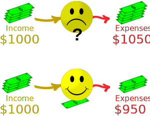
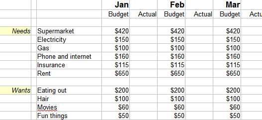
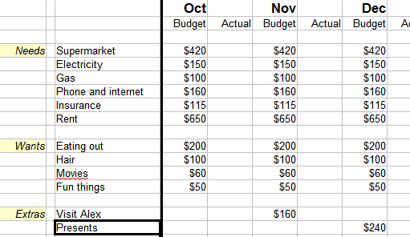
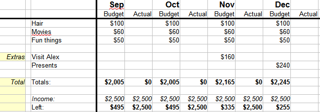
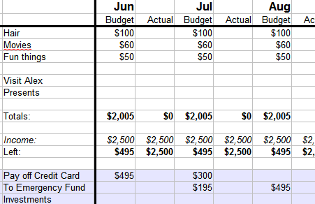

Personal Budget
Spending too much?

A Budget can help!
Spending less than you earn is Happiness.
To help you get your money under control, make a budget.
You can plan your whole year this way, and have money left over to save for big things like a new car, house, holidays, etc.
Let's start!
Where Does My Money Go?
Your first step is to work out where you spend your money now. If you don't know, then start keeping careful notes on every thing you spend money on for one month. Do the best you can to separate needs from wants.
List the things you need and what you spend on them per month.
Example: Sam's needs for last month were:
- $420 at the supermarket
- $150 on electricity
- $100 on transport
- $160 on phone and internet
- $115 on insurance (car, house)
- $650 on rent
That is a total of $1,595
Your Turn: List all your expenses for last month. If you are still at school, ask to do the family budget.
Type the numbers into a spreadsheet (like Open Office Calc or Microsoft Excel).
Now list your wants (not needs) and how much you'd like to spend on them per month.
Example: Sam has these "wants":
- $200 eating out
- $100 hair
- $60 movies
- $60 clothes
- $50 fun things
That is a total of $470
And then find out what is left over from what you earned.
Example: Sam earned $2500 last month,
Now let's see what is left over:
$2500 − $1,595 − $460 = $435
Great! Sam has $435 left over. It is important to have some left over here, as we will need it for other things later.
Your Turn: Complete your list of wants and needs, and compare it to your income, hopefully there is some left too.
How did you go? You might need to cut your amounts back a little. We will look at that soon.
Budget for the Whole Year
Now let's make it a yearly budget.
First copy your single month to every month of the year:

then include budgets for Christmas, birthdays, expenses that come up yearly or quarterly ... in short any need or want that is not monthly:

Now do totals, put in your income and find what is left each month:

Also, your first budget may not be very realistic. Expenses are going to come along that you didn't think of. That is OK, it is part of your learning experience.
What if you don't have money left over? Well, you can:
- increase your income (if you can), or
- reduce expenses
Reducing Expenses
Go over your budget and think carefully how you can reduce each item.
- Drink water, it is cheaper and healthier than sugary drinks
- Buy healthy snacks to replace junk food
- Stop eating out so much, home cooked meals are healthier anyway
- Look for bargains at supermarkets
- Cook food in bulk and store it in the freezer
- Is it cheaper to use public transport or to drive?
- Walk rather than drive short distances, it is cheaper and healthier
- A more fuel-efficient car can help
- Review your smart phone and home phone plans. Do you really need all the services?
- Cut back monthly subscriptions, do you really all of them?
- Get quotes for replacing your insurance policies
- If you have high credit card interest, shop around for better rates
- Relocate closer to work to save transport costs
- Do you own your own house? Install solar to save on electricity
- If your house is far from work, rent it out (to someone reliable!) and use that money to rent a place near work
- Look around for cheaper housing
Car

Owning and running a car is a big expense that you can look at closely.
A rough rule of thumb is to take the cost of fuel and double it. A trip that will cost you $50 in fuel actually costs about $100 due to wearing out your tyres, engine, transmission, etc and reducing the value of the car generally.
Also keeping an old car running can save money if it does not cost too much in fuel and repairs. A thousand or two in repairs every year can be cheaper than buying a new car.
Keep Your Money Under Control
Keeping track of your expenses is very important!
When you spend money, put it in the "Actual" column for that month. Try to discipline yourself not to go over your budget.
But also be gentle with yourself.
Think of your budget as a strict but kind friend.
Wrong way: I just got paid $2500. After all expenses I should have $500 left, so I can spend $500 on a new game console!
Right way: I have spent $40 of my $100 "fun" budget, so I can spend $60 on games.
Wrong: those $200 shoes are on sale for $120. If I buy them I am saving $80
Right: the shoes cost $120, I am spending $120
Also remember that the excitement of buying often leads to a let down feeling later. Stay within your budget to always feel good about yourself.
Envelopes
This helps some people:

Take out cash from the bank and put it in individual budget envelopes.
You can only spend from the envelopes.
Putting your Money To Good Use
Now you get to decide what to do with your left-over money.
Pay Off High Interest Debt
If you have any high-interest debt (such as credit cards), pay those off first!
Emergency Fund
Next, put money aside for emergencies. Things break down and need replacing or repair (plumbers are expensive). Your pet might need a vet. A friend might need help.
At least $2,000. More if you can (some people suggest 3 months salary worth).
It must be easy to get at (cash or bank account).
Having emergency money also gives you a good sense of confidence in life.

Investments
When you have paid off your high interest debt, and have money in an emergency fund it is time to think about investing Learn more about investing.